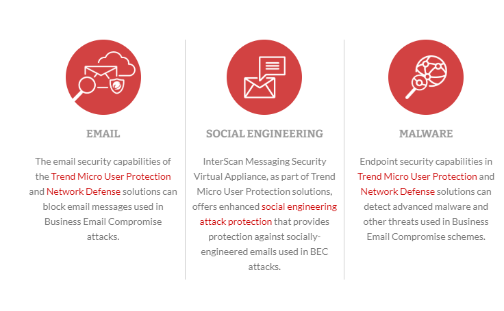

Business Email Compromise (BEC) ;- Direcionado para empresas que fazem transferencias bancárias e tem clientes no exterior.
- Contas são envolvidas com transferencias falsificadas, comprometidas por keyloggers ou ataques de phishing .
- Dependem da engenharia social.
Eles fingem:
- ser o CEO
- advogado
- fornecedores
- Roubo de dados por funcionarios
O treinamento e a conscientização dos funcionários podem ajudar as empresas a identificar esse tipo de golpe
Como mitigar o risco|?
- Fique alerta com emails inesperados
- Faz uma segunda checagem do email
- Deixe os cara de alta nivel espertos a qualquer tipo de ação
- Pedir para os fornecedores utilizarem uma segunda assinatura
- Usar soluções de segurança avançada para email
